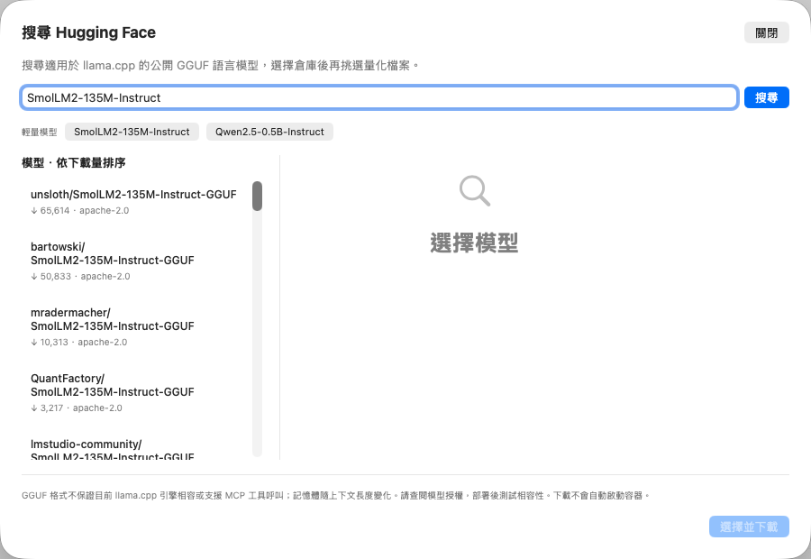
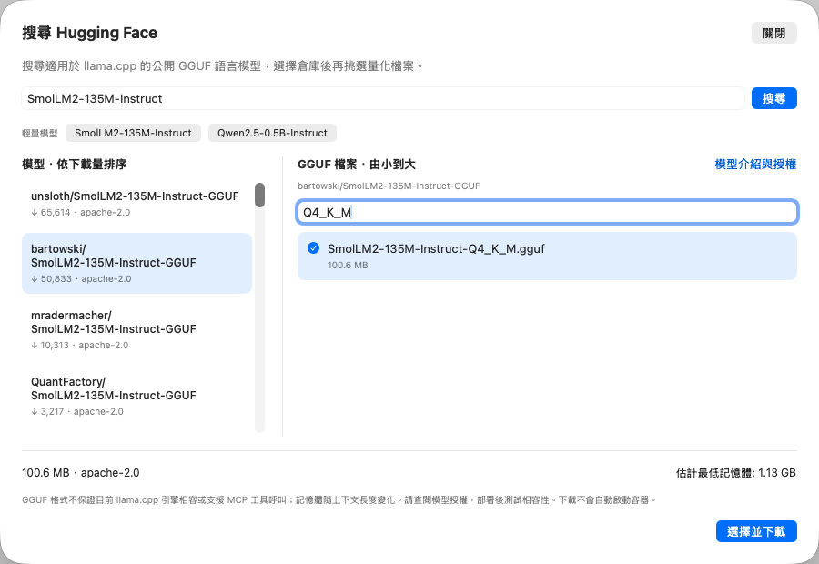
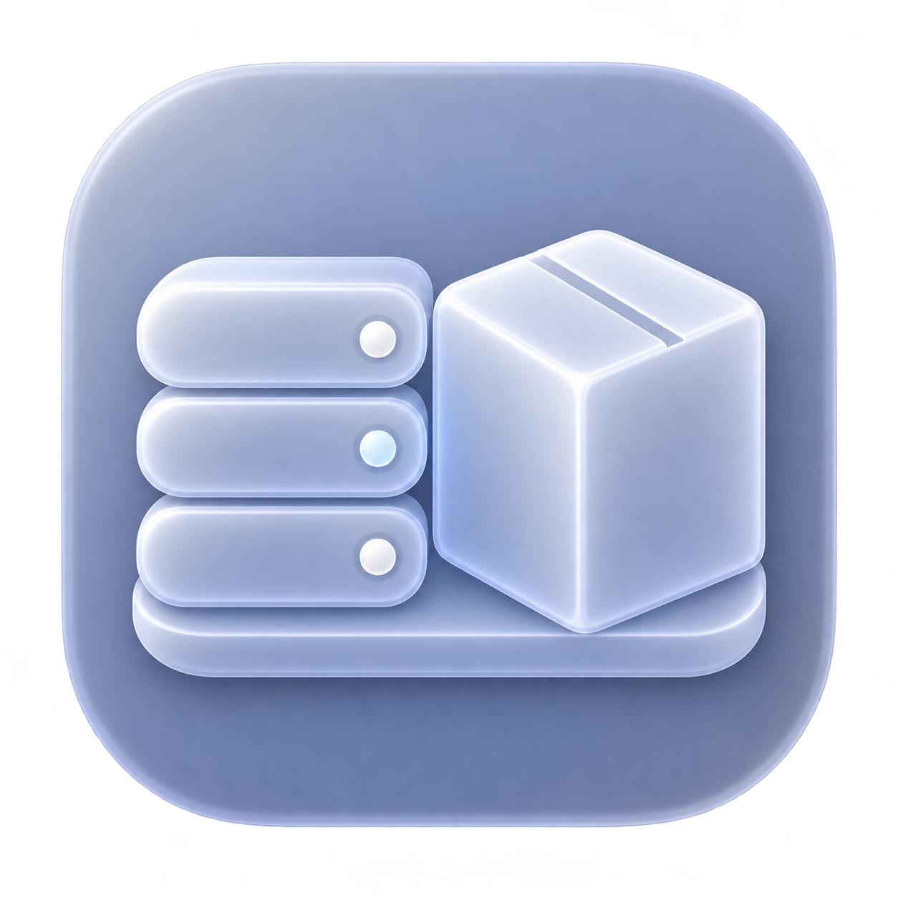

CONTAINER DESK
從搜尋模型，
到本機 AI。
Hugging Face × llama.cpp × Apple Container
90 秒操作解說 · 品牌更新預覽
從搜尋模型，到本機 AI
01 / 搜尋先從
先從
輕量模型開始。
本機 AI → 搜尋 Hugging Face
SmolLM2-135M-Instruct
實機介面截圖 · 無需先輸入下載網址

選擇模型倉庫，再查看可下載檔案。
02 / 挑選選對檔案，
選對檔案，
再下載。
Q4_K_M
105 MB受測單檔 GGUF
查看授權、模型卡與估計記憶體

檔名篩選輸入 Q4_K_M，快速找到量化版本。
03 / 下載完整性，
完整性，
下載時確認。
固定模型版本
核對檔案大小
驗證 SHA-256
操作解說：下載不會自動啟動容器

下載中可取消；校驗失敗不會設為已選模型。
04 / 建立容器
先用小配置，驗證文字推論。
2CPU 核心
1 GiB記憶體
1,024上下文 tokens
設定解說建立並啟動 llama.cpp → 測試模型
伺服器映像另行下載 · Linux VM 內使用 CPU · 無 Metal 加速
示範配置以輕量文字測試為目的，非效能承諾。
05 / MCP 相容性能回答，
能回答，
不等於能呼叫工具。
135M 小模型：文字推論通過，
工具呼叫測試未通過。
受測結果解說，非成功操作畫面
連接 MCP 伺服器
↓測試模型相容性
↓檢查參數 → 確認執行
使用工具前必須通過測試，並確認每一批呼叫。
開始使用下一個模型，
下一個模型，
由你挑選。
GitHub · container-desk
v0.3.0-preview · DMG
Apple Silicon · macOS 26+
三語教學 · 預覽版未經 Apple 公證

github.com/eqwgeryfgbdf/container-desk